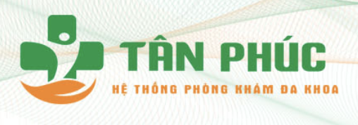
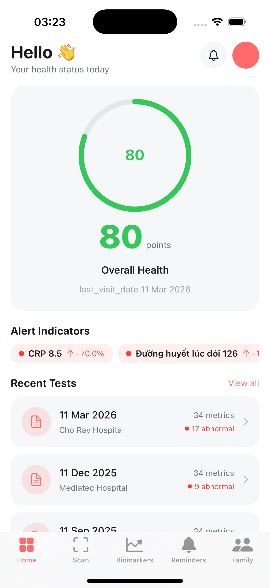
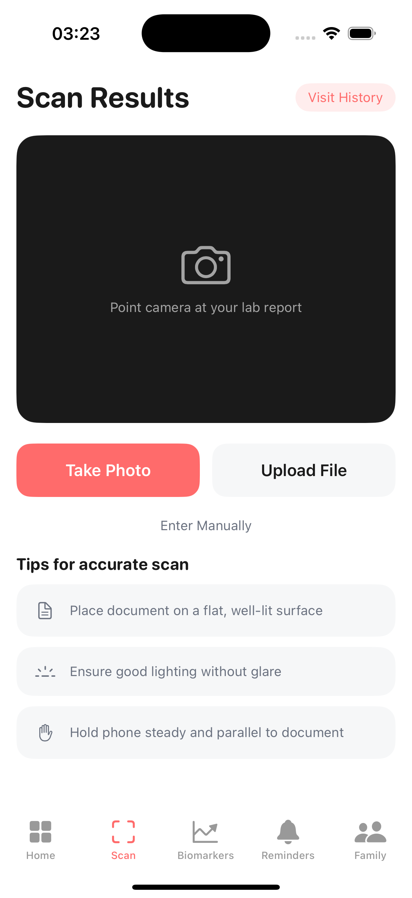
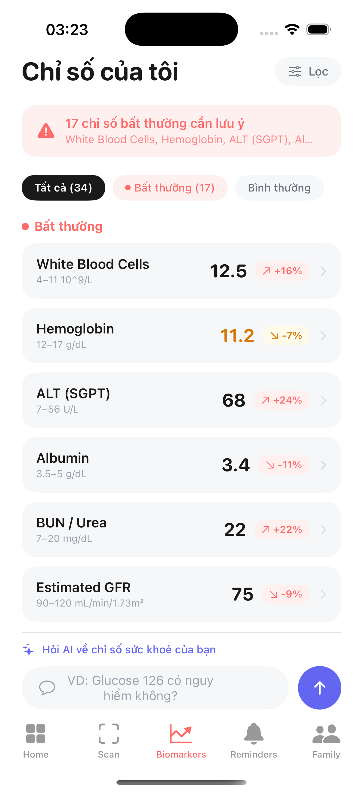
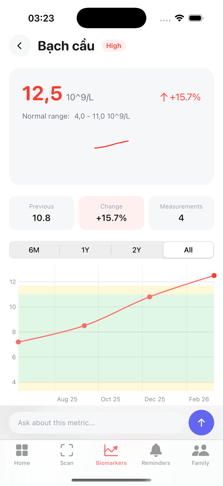
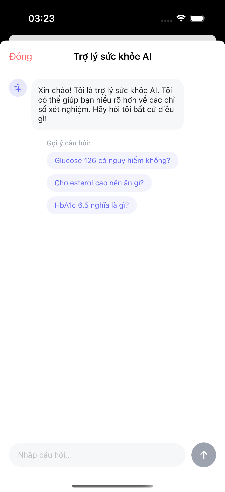
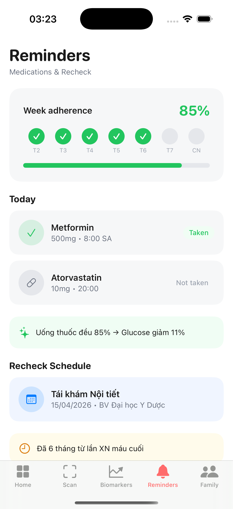
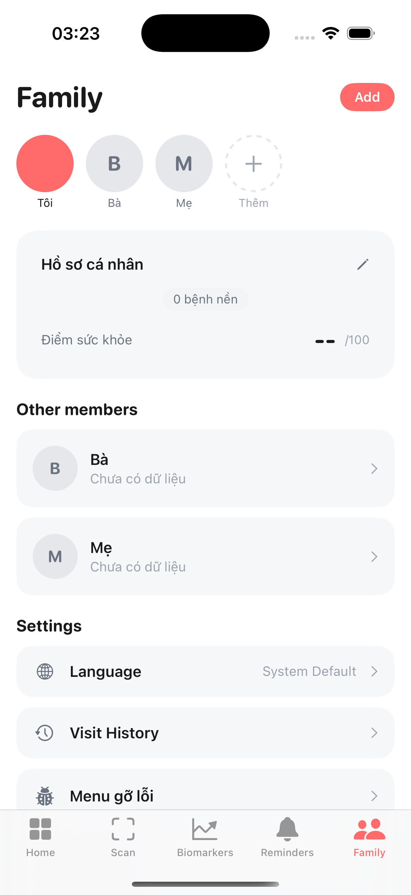
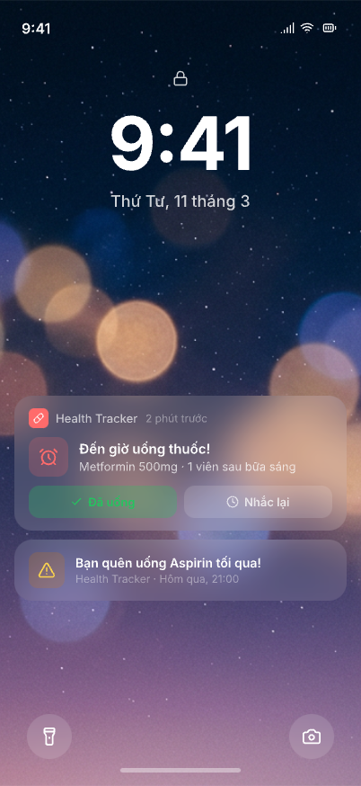
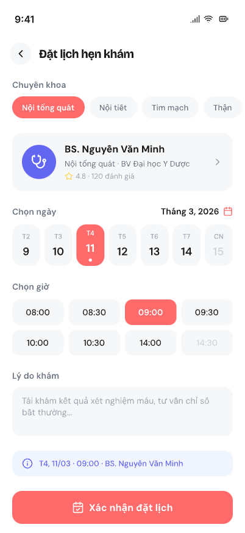

AI đọc & phân tích tự động — không cần nhập tay
Hiểu ngay tình trạng tổng quát bằng một con số & màu sắc
Nhận alert ngay lập tức theo mức độ nghiêm trọng
Lịch nhắc thông minh, theo dõi tuân thủ phác đồ điều trị
Tra cứu ý nghĩa chỉ số ở mức kiến thức phổ thông, giúp BN chuẩn bị câu hỏi trước khi gặp BS









Chụp phiếu → tự nhận diện 34 chỉ số, phân loại 7 hệ cơ quan
Biểu đồ lịch sử với khoảng tham chiếu, lọc 6 tháng / 1 năm / 2 năm
Giải thích ý nghĩa chỉ số ở mức kiến thức phổ thông, dễ hiểu
Alert ngay lập tức, phân loại theo mức độ nghiêm trọng với màu sắc
Lịch uống thuốc hàng ngày, theo dõi tuân thủ, nhắc lịch tái khám
Theo dõi sức khoẻ nhiều người thân trong 1 app duy nhất
Sắp ra mắtBệnh nhân hiểu bệnh + được nhắc uống thuốc → chấp hành phác đồ
BN tự tra cứu kiến thức cơ bản trên app, giảm câu hỏi lặp lại cho bác sĩ
App nhắc lịch + bệnh nhân thấy rõ sự cấp thiết từ chỉ số
Áp dụng y tế số — khẳng định bệnh viện hiện đại, đi đầu trong chuyển đổi số y tế
Bệnh nhân chia sẻ kết quả trực tiếp — bác sĩ có đầy đủ lịch sử
Triển khai thử nghiệm với 50–100 bệnh nhân. Đo lường phản hồi, tỷ lệ tuân thủ & mức độ hài lòng.
Tích hợp logo, màu sắc bệnh viện trong app. Mở rộng cho toàn bộ bệnh nhân khám sức khoẻ định kỳ.
Nhắc uống thuốc thông minh, xuất báo cáo PDF cho bác sĩ, chia sẻ kết quả qua QR code, tích hợp hệ thống bệnh viện.